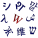
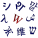
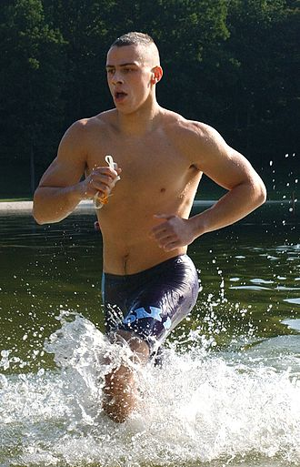
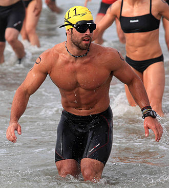
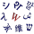

Wiktionary
Definitions 
Wikidata
Database
Wiktionary
Definitions 
Wikidata
Database

Not logged in
Talk contributions Creat account log inFrom Wikipedia, the free encyclopedia
Exercise is any bodily activity that enhances or maintains physical fitness and overall health and wellness. It is performed for various reasons, including increasing growth and development, preventing aging, strengthening muscles and the cardiovascular system, honing athletic skills, weight loss or maintenance, improving health and also for enjoyment. Many individuals choose to exercise outdoors where they can congregate in groups, socialize, and enhance well-being.
Running in water
Physical fitness is a state of health and well-being and, more specifically, the ability to perform aspects of sports, occupations and daily activities. Physical fitness is generally achieved through proper nutrition, moderate-vigorous physical exercise, and sufficient rest.
Physical fitness is generally achieved through exercise. Photo shows Rich Froning Jr. – four-time winner of "Fittest Man on Earth" title.
Summary of long-term adaptations to regular aerobic and anaerobic exercise. Aerobic exercise can cause several central cardiovascular adaptations, including an increase in stroke volume (SV) and maximal aerobic capacity (VO2 max), as well as a decrease in resting heart rate (RHR). Long-term adaptations to resistance training, the most common form of anaerobic exercise, include muscular hypertrophy, an increase in thephysiological cross-sectional area (PCSA) of muscle(s), and an increase in neural drive, both of which lead to increased muscular strength. Neural adaptations begin more quickly and plateau prior to the hypertrophic response.
... that TROPEX 2017 witnessed the participation of forty-five major surface ships, five submarines, and fifty aircraft from the Indian Navy's Western and Eastern Naval Command?
Do you have a question about Exercise that you can't find the answer to? Consider asking it at the Wikipedia reference desk.
The followingWikimedia Foundation sister projects
provide more on this subject:
Wikibooks
Books
Commons
Media
Wikinews
News
Wikiquote
Quotations
Wikisource
Texts
Wikiversity
Learning resources
Wiktionary
Definitions 
Wikidata
Database
What are portals? List of portals
Categories: Phhysical Exercise | Human acitvities PortalsThis page was last edited on 24 February 2019, at 23:14 (UTC). Text is available under the Creative Commons Attribution-ShareAlike License; additional terms may apply. By using this site, you agree to the Terms of Use and Privacy Policy. Wikipedia® is a registered trade mark of the Wikimedia Foundation, Inc., a non-profit organization. Privacy policyAbout Wikipedia Disclaimers Contact Wikipedia Developers Cookie statement Mobile view.